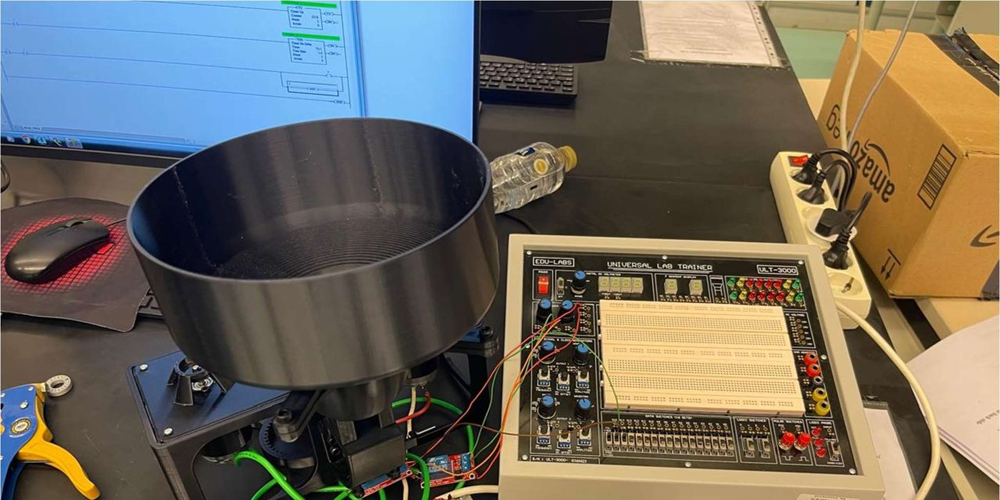

MENG 4779 Electromechanical Systems · Spring 2026
Smart tennis ball launcher
A tennis ball launcher we designed, printed, wired and programmed: two wheels spinning in opposite directions fire the ball, and a PLC runs it.

What it is
The group project for MENG 4779 Electromechanical Systems: build a working machine that combines mechanics, motors and PLC control. Our group of five built a tennis ball launcher.
What we built
Two wheels spin in opposite directions and grip the ball between them, so it leaves at the wheels' surface speed. The parts were designed in SolidWorks and 3D printed.
It is controlled by PLC ladder logic, written and verified in RSLogix:
- start and stop,
- a timed auto-shutdown,
- a counter for the balls fired.
What I did
We split the work by who was most interested in, and best at, each part. I was the project coordinator, did the CAD of the launcher, and wrote the PLC ladder logic.